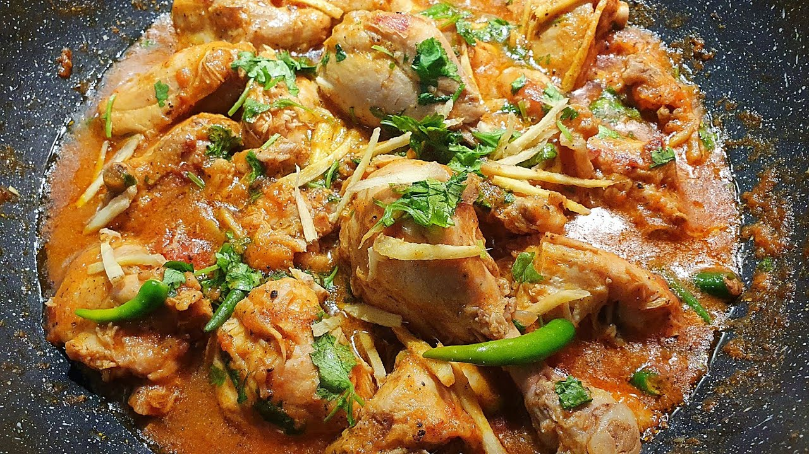

Shinwari Karahi

Ingredients
- Chicken (cut into 16 pieces) 1 kg
- Green chilies 8
- Tomatoes slice 1/2 kg
- Oil 3/4 cup
- Ginger garlic paste 1 tbsp
- Crushed black pepper 1/2 tsp
- Salt 1, 1/2 tsp
- Crushed cumin 1, 1/2 tsp heaped
How to make Shinwari Chicken Karahi
Method
- Heat oil, add chicken and fry for 10 minutes.
- Add ginger garlic paste and chopped tomatoes, cover and cook for 10 minutes.
- Then add salt, green chilies, roasted crushed cumin and black pepper.
- Cook over high flame till chicken is tender and oil starts to separate.